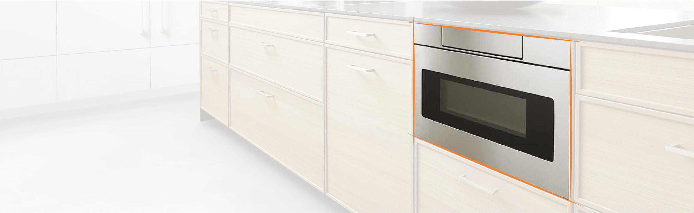
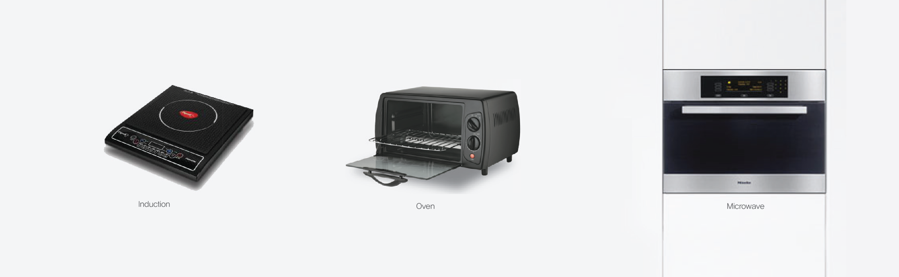

<!DOCTYPE HTML>
<!--
	Story by HTML5 UP
	html5up.net | @ajlkn
	Free for personal and commercial use under the CCA 3.0 license (html5up.net/license)
-->
<html>
	<head>
		<title>Pollo</title>
		<meta charset="utf-8" />
		<meta name="viewport" content="width=device-width, initial-scale=1" />
		<link rel="stylesheet" href="assets/css/main.css" />
	</head>
	<body>

		<!-- Wrapper -->
			<div id="wrapper" class="divided">

				<!-- One -->
					<section class="banner style1 orient-left content-align-left image-position-right fullscreen onload-image-fade-in onload-content-fade-right">
						<div class="content">
							<h1>Pollo</h1>
							<p class="major">a roundish 2-in-1 heating appliances</p>
							<p class="detail">This project is a graduation work from creative design course in 2017.</br>It started with a question that “ Why every microwave is in rectangular shape?”. A “Pollo” is a roundish heating appliance with microwave and induction functions. With this roundish shape, it can raise the space efficiency. Also, it brought a design motif in the shape of a chicken.</p>
							<ul class="actions vertical">
								<span><a class="button small">Product design</a></span>
								<span><a class="button small">Home appliances</a></span>
							</ul>
						</div>
						<div class="image">
							
						</div>
					</section>

				<!--layout-->
				<div id="mainContainer">
					<div class="content">
						<div class="background">
							<h3>Key Question</h3>
							
							
							<p>"How do hearing-impaired watch movies?"</br>People with hearing impairments are watching movies through special subtitles with commentary on the screen. In Korea, support for this issue is expanding, but there is still a shortage of special subtitles in short films.</p>
						</div>
					</div>
				</div>


				<div id="sidebar">
					<div class="content">
						<h4>My role</h4>
						<p>Because it was my graduation exhibition project, I was able to experience the product design process from the beginning to the end. Therefore, I did research and ideation in the early stage, and then, made a working prototype.</p>
					</div>
					<div class="content">
						<h4>Advisor</h4>
						<p>Prof. Yunwoo jung</br><span class="school">Ulsan National Institute of Science and Technology</span></p>
					</div>
				</div>


		<!-- Scripts -->
			<script src="assets/js/jquery.min.js"></script>
			<script src="assets/js/jquery.scrollex.min.js"></script>
			<script src="assets/js/jquery.scrolly.min.js"></script>
			<script src="assets/js/skel.min.js"></script>
			<script src="assets/js/util.js"></script>
			<script src="assets/js/main.js"></script>

	</body>
</html>
